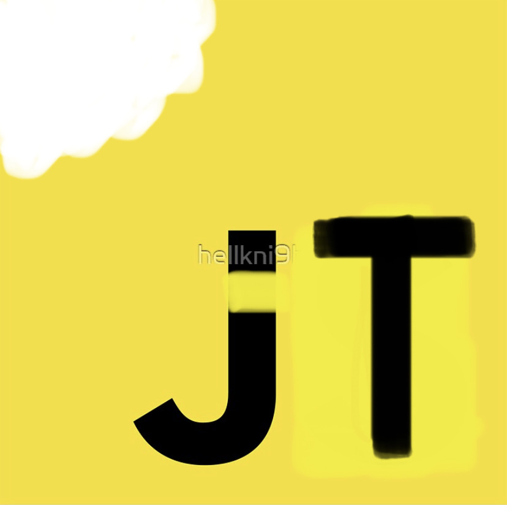

Proposal
I would like to start a for-charity ongoing “bake sale” called jTreats for my time at Prime. The overall concept is:
- Bring baked-at-home treats to be available in the commons
- People pay (i.e. donate) electronically by honor system, to a dedicated account
- 100% of proceeds after food cost will be donated to organizations that promote STEM fields to underserved communities in MN
This idea has synergy between four things important to me:
- My love to bake and share treats
- My desire to contribute positively to our greater community
- It will start momentum for my solo project
- It may help me in my future job search, whether by connections I may make through it or just by showing personal initiative
Of course there are also some concerns associated with this kind of idea. I will address what I see as the biggest ones:
Safety and Liability:
Personal workload:
- As a professional baker, I have a good grasp on the level of effort I can afford to expend without negatively affecting my studies at Prime or other personal commitments
Transparency in proceeds/donations:
- I would eventually create a website that will have a ticker for dollars donated, and maybe treats sold
- I might potentially share my food cost spreadsheets, or if not the spreadsheets at least the total food costs